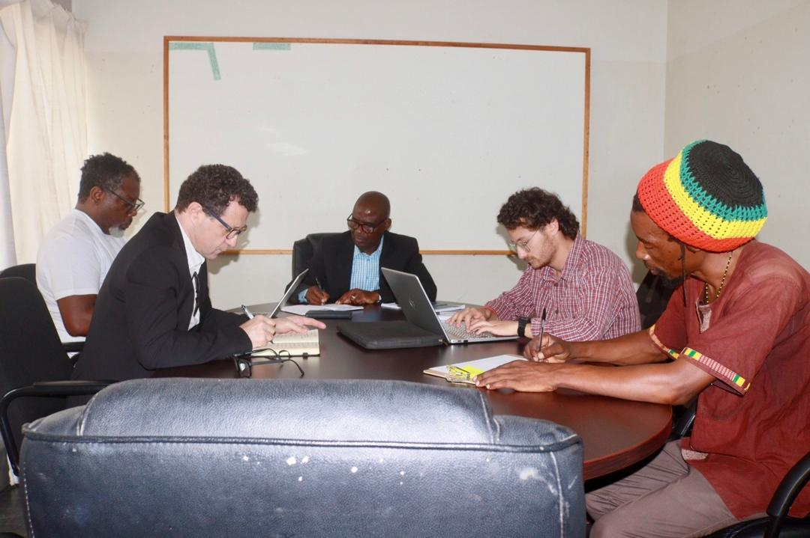
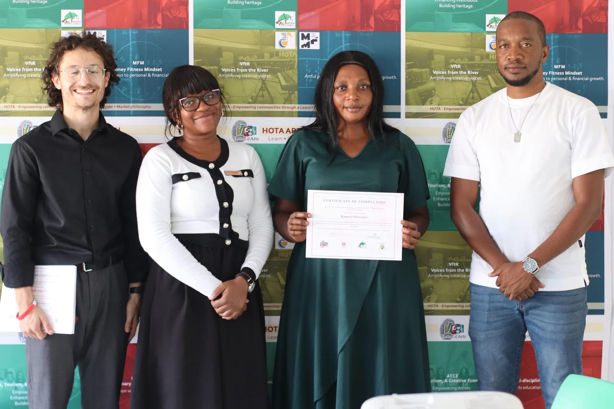
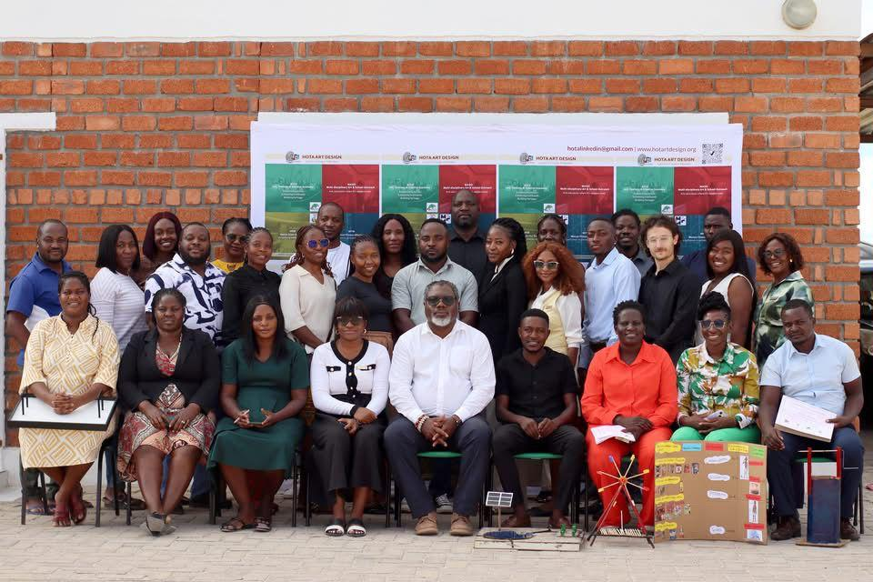

HOTA Art Design runs Art, Tourism and the Creative Economy (ATCE-II), a training programme funded by the University of St Andrews for pre-vocational subject teachers across Kavango West. Teachers in subjects like agriculture, home economics, woodworking, and design and technology.
I helped design and lead a three day residential training in Nkurenkuru for 23 of those teachers. Working in subject groups, each group took a real classroom topic and ran it through a simple design process: generate an idea, build a rough model, get feedback, improve it, then present the result. The one rule was materials. Whatever a group built had to use things that are cheap, easy to find, and within reach of a learner in a Kavango classroom, no specialist kit, no imported supplies. By the final day every group had a working prototype.
Pre and post training surveys showed the training worked. Across the matched pairs of teachers who completed both surveys, self rated competence rose from 3.90 to 4.17 on a five point scale, and the biggest gains landed on exactly what the workshop set out to teach: telling technical only teaching apart from creative plus technical teaching, and hands on building. Teachers rated the training itself just as highly, with 100 percent agreeing the content was relevant to their teaching.
The teachers were just as clear about what would make it stick. The recurring ask, before the training, after it, and in the ratings, was more materials. That is the evidence base HOTA is using to push for a materials budget in the next phase, and it is also why the project's next step is classroom shadowing this June, to see how much of this training actually reaches a Kavango classroom.


